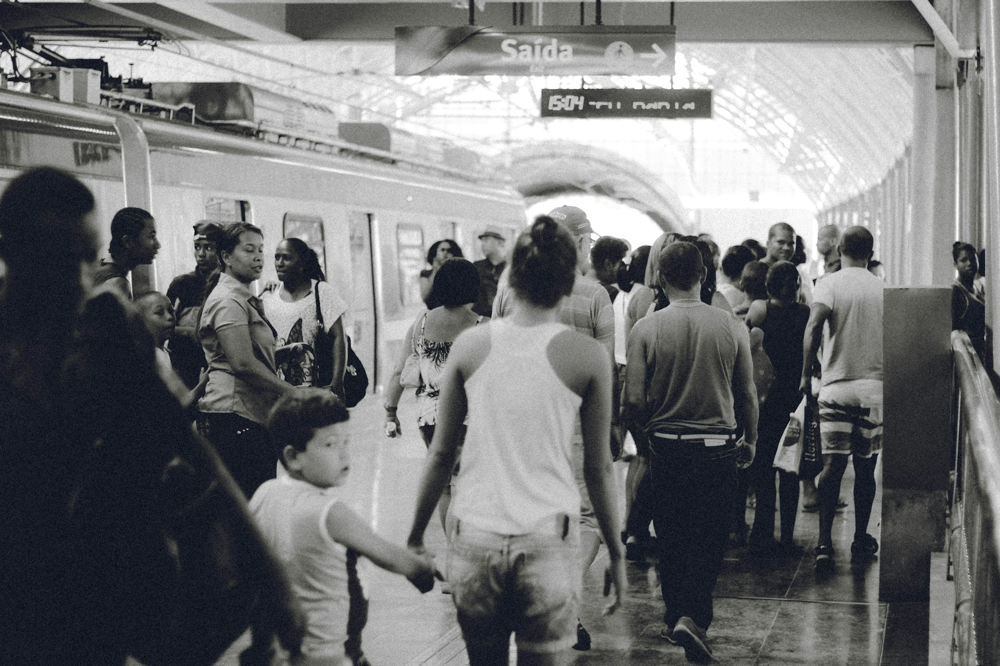
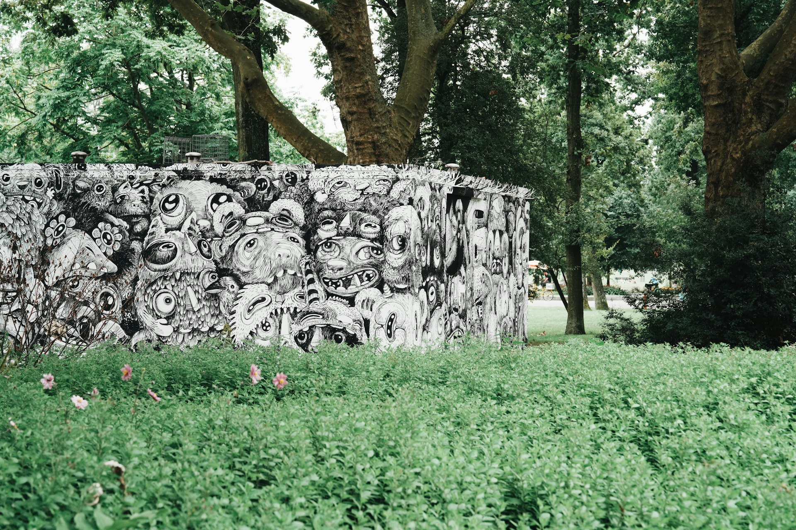
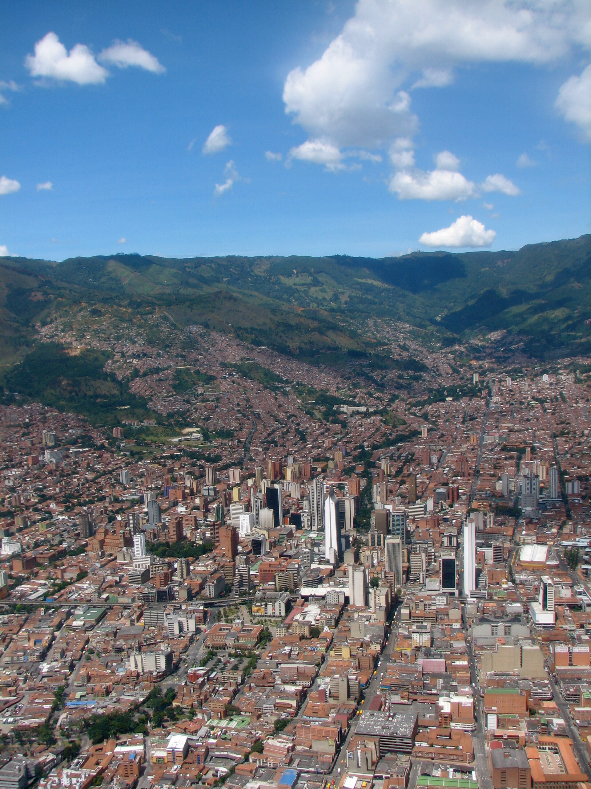
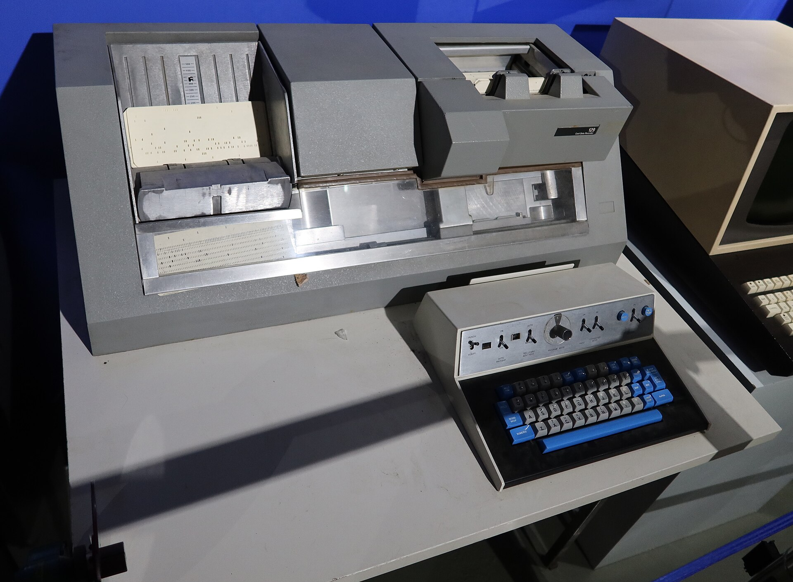
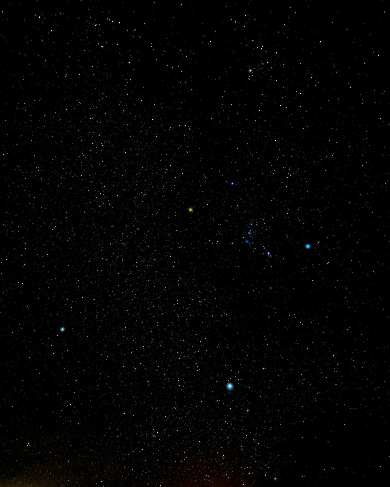

Análisis de Datos 2 · EAFIT2026
¿Qué tan
parecidos
son?
Escalamiento multidimensional con muchos objetos
Hout, Cunningham, Robbins & MacDonald · SAGE Open, 2018
Equipo [ nombre del equipo · 10 integrantes ]
01 — Contexto de la investigación
Comparar
todo con
todo
[ ¿Qué problema querían resolver y por qué importa? · máx. 15 palabras ]
OBJETOS
10
COMPARACIONES
45

02 — Objetivo del estudio
?
¿El mapa
aguanta con
muchos objetos?
[ Qué buscaban conocer, explicar o descubrir los autores ]
03 — Justificación de la técnica
De una tabla
a un mapa
Distancias en línea recta (km) · ejemplo
[ Qué permite ver que un análisis sencillo no deja ver ]

Medellín · S. Pipkin · CC BY-SA 2.004 — Datos utilizados
Participantes
que no
existen
[ Qué se simuló · qué variables · cuál es la unidad de análisis ]
SIMULADO
Mapa verdadero
Participante simulado (con ruido)

IBM card punch · S. Elliott · CC BY-SA 2.005 — Aplicación de la técnica
0
experimentos simulados
FACTOR 1
Nº de objetos
[ rango usado ]
FACTOR 2
Ruido
[ niveles de error ]
FACTOR 3
Dimensiones
[ verdaderas vs. estimadas ]
06 — Aplicación de la técnica
Tres estudios,
paso a paso
1
Estudio 1
[ Qué variaron · qué midieron ]
2
Estudio 2
[ Qué variaron · qué midieron ]
3
Estudio 3
[ Qué variaron · qué midieron ]
07 — Resultados principales
Peor ajuste,
mejor mapa
[ Interpretación del gráfico en 2 o 3 frases ]
ESQUEMA ILUSTRATIVO · ver Figura 1 del paper
08 — Resultados principales
Con las
dimensiones
equivocadas,
nada sirve
[ Qué pasa si se eligen mal las dimensiones ]
[ Figura 3 o 4 del paper ]
captura recortada · 800 × 560
captura recortada · 800 × 560
El video no cargó. Ábrelo aparte: carpeta video, archivo Participante_7.mp4

09 — Conclusiones y limitaciones
Lo que sí,
lo que no
✓ Respaldado
[ 2 o 3 conclusiones que los resultados sí sostienen ]
! Con cautela
[ Qué no se puede afirmar todavía y por qué ]

10 — Aplicación empresarial
El mapa de
tu marca
[ Empresa · problema · cómo ayuda el MDS ]
Referencias
Hout, M. C., Cunningham, C. A., Robbins, A., & MacDonald, J. (2018). Simulating the fidelity of data for large stimulus set sizes and variable dimension estimation in multidimensional scaling. SAGE Open, 8(2). https://doi.org/10.1177/2158244018773143
[ Fuentes adicionales del equipo · APA 7 ]
Fotos: C. Damásio, A. Chernykh, V. Gariev, F. Rasyid, G. Duarte y otros autores (Unsplash) · S. Pipkin y S. Elliott (Wikimedia Commons, CC BY-SA 2.0)